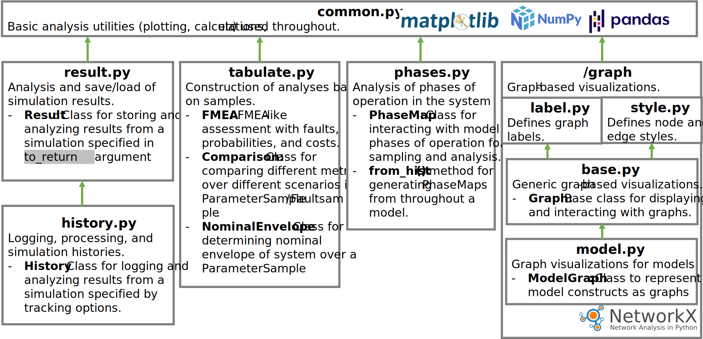

fmdtools.analyze
Package for analyzing simulation results.
{kind=link}
The analyze package is organized into the modules:
Some common methods for analysis used by other modules. |
|
Defines how simulation results (histories) structured and processed. |
|
Defines |
|
Package for graph representations and analysis of model structures. |
|
Translates simulation outputs to pandas tables for display, export, etc. |
|
Module for analyzing phases and time-based sampling schemes. |
The model reference for each of these is provided below:
fmdtools.analyze.common
Some common methods for analysis used by other modules.
Has methods:
bootstrap_confidence_interval(): Convenience wrapper for scipy.bootstrapnan_to_x(): Helper function for Result Class, returns nan as zero if present, otherwise returns the numberis_numeric(): Helper function for Result Class, checks if a given value is numericdiff(): Helper function for finding inconsistent states between val1, val2, with the difftype optionjoin_key(): Helper function for Result Classsetup_plot(): initializes mpl figureplot_err_hist(): Plots a line with a given range of uncertainty around itplot_err_lines(): Plots error lines on the given plotmultiplot_legend_title(): Helper function for multiplot legends and titlesconsolidate_legend(): Creates a single legend for a given multiplot where multiple groups are being comparedload_folder(): Lists files to load in folder.file_check(): Check if files exists and whether to overwrite the fileauto_filetype(): Helper function that automatically determines the filetype (npz, csv, or json) of a given filenamecreate_indiv_filename(): Helper function that creates an individualized name for a file given the general filename and an individual id
- fmdtools.analyze.common.add_title_xylabs(ax, title='', xlabel='', ylabel='', zlabel='', xlim=(), ylim=(), zlim=())
Add/set title, x/y labels, and limits to the given axis.
- fmdtools.analyze.common.auto_filetype(filename, filetype='', filetypes=['npz', 'csv', 'json'])
Automatically determine the filetype (npz, csv, or json) of a filename.
Examples
>>> auto_filetype("hi.npz") 'npz' >>> auto_filetype("example.csv") 'csv' >>> auto_filetype("example.json") 'json' >>> auto_filetype("x.pdf") Traceback (most recent call last): ... Exception: Invalid filename in x.pdf, ensure extension is in ['npz', 'csv', 'json']. >>> auto_filetype("no_ext", "csv") 'csv'
- fmdtools.analyze.common.bootstrap_confidence_interval(data, method=<function mean>, return_anyway=False, **kwargs)
Return bootstrap confidence interval (helper for scipy.bootstrap).
- Parameters:
data (list/array/etc) – Iterable with the data. May be float (for mean) or indicator (for proportion)
method (method) – numpy method to give scipy.bootstrap.
return_anyway (bool) – Gives a dummy interval of (stat, stat) if no . Used for plotting
- Return type:
statistic, lower bound, upper bound
- fmdtools.analyze.common.clear_prev_figure(**kwargs)
Clear previous animations for plot_from methods.
- fmdtools.analyze.common.consolidate_legend(ax, loc='upper left', bbox_to_anchor=(1.05, 1), add_handles=[], remove_empty=True, color='', **kwargs)
Create a single legend for plots where multiple groups are being compared.
- Parameters:
ax (matplotlib axis) – Axis object to mark on
loc (str) – Legend location (see matplotlib.legend). Default is ‘upper left’.
bbox_to_anchor (tuple) – Anchoring bounding box point (see matplotlib.legend). Default is (1.05, 1).
add_handles (list) – Labelled plot handles to add to the legend. Default is [].
remove_empty (bool) – If add_handles is used, this toggles whether to add unlabeled entries to the legend. Default is False.
- fmdtools.analyze.common.create_indiv_filename(filename, indiv_id, splitchar='_')
Create filename name for a file given general filename and individual id.
Examples
>>> create_indiv_filename("hi.csv", "4") 'hi_4.csv'
- fmdtools.analyze.common.diff(val1, val2, difftype='bool')
Find inconsistent states between val1, val2.
- The difftype option (‘diff’ (takes the difference), ‘bool’ (checks if the same),
and float (checks if under the provided tolerance))
Examples
>>> diff([1, 2, 3], [2, 2, 3]) array([ True, False, False]) >>> diff([1, 2, 3], [2, 2, 3], difftype="diff") array([-1, 0, 0])
- fmdtools.analyze.common.file_check(filename, overwrite)
Check if files exists and whether to overwrite the file.
- fmdtools.analyze.common.get_sub_include(att, to_include)
Determine attributes of att to include based on provided dict/str/list/set.
- fmdtools.analyze.common.is_bool(val)
Check if the value is a boolean.
Examples
>>> is_bool(True) True >>> is_bool(1.0) False >>> is_bool(np.array([True])[0]) True >>> is_bool(np.array([1.0])[0]) False
- fmdtools.analyze.common.is_known_immutable(val)
Check if value is known immutable.
- fmdtools.analyze.common.is_known_mutable(val)
Check if value is a known mutable.
- fmdtools.analyze.common.is_numeric(val)
Check if a given value is a number.
Examples
>>> is_numeric(1.0) True >>> is_numeric("hi") False >>> is_numeric(np.array([1.0])[0]) True >>> is_numeric(np.array(["hi"])[0]) False
- fmdtools.analyze.common.join_key(k)
Join list of keys into single key separated by a ‘.’.
Examples
>>> join_key(["key", "subkey"]) 'key.subkey' >>> join_key("existing_key") 'existing_key'
- fmdtools.analyze.common.load_folder(folder, filetype)
Create list of files to be read from a folder.
(e.g., that have been saved from multi-scenario propagate methods with ‘indiv’:True)
- Parameters:
folder (str) – Name of the folder. Must be in the current directory
filetype (str) – Type of files in the folder (‘pickle’, ‘csv’, or ‘json’)
- Returns:
files_to_read – files to load for endclasses/mdlhists.
- Return type:
list
- fmdtools.analyze.common.mark_times(ax, tick, time, *plot_values, fontsize=8, rounddec=1, pretext='t=')
Mark times on an axis at a particular tick interval.
- Parameters:
ax (matplotlib axis) – Axis object to mark on
tick (float) – Tick frequency.
time (np.array) – Time vector.
*plot_values (np.array) – x,y,z vectors
fontsize (int, optional) – Size of the font. The default is 8.
- fmdtools.analyze.common.multiplot_helper(cols, *plot_values, figsize='default', titles={}, sharex=True, sharey=False, fig=None, axs=None)
Create multiple plot axes for plotting.
- fmdtools.analyze.common.multiplot_legend_title(groupmetrics, axs, ax, legend_loc=False, title='', v_padding=None, h_padding=None, title_padding=0.0, legend_title=None)
Create multiplot legends and titles on shared axes.
- fmdtools.analyze.common.nan_to_x(metric, x=0.0)
Return nan as zero if present, otherwise return the number.
Examples
>>> nan_to_x(1.0) 1.0 >>> nan_to_x(np.nan, 10.0) 10.0
- fmdtools.analyze.common.phase_overlay(ax, phasemap, label_phases=True)
Overlay phasemap information on plot.
- fmdtools.analyze.common.plot_err_hist(err_hist, ax=None, fig=None, figsize=(6, 4), boundtype='fill', boundcolor='gray', boundlinestyle='--', fillalpha=0.3, time='time', xlabel='time', ylabel='', title='', xlim=(), ylim=(), **kwargs)
Plot a line with a given range of uncertainty around it.
- Parameters:
err_hist (History) –
- hist of line, low, high values. Has the form ::
{‘time’: times, ‘stat’: stat_values, ‘low’: low_values, ‘high’: high_values}
ax (mpl axis (optional)) – axis to plot the line on
fig (mpl figure (optional)) – figure to plot line on
figsize (tuple) – figure size (optional)
boundtype ('fill' or 'line') – Whether the bounds should be marked with lines or a fill
boundcolor (str, optional) – Color for bound fill The default is ‘gray’.
boundlinestyle (str, optional) – linestyle for bound lines (if any). The default is ‘–‘.
fillalpha (float, optional) – Alpha for fill. The default is 0.3.
time (str, optional) – history to use as time. The default is ‘time’.
**kwargs (kwargs) – kwargs for the line
- Returns:
fig (mpl figure)
ax (mpl, axis)
- fmdtools.analyze.common.plot_err_lines(times, lows, highs, ax=None, fig=None, figsize=(6, 4), **kwargs)
Plot error lines on the given plot.
- Parameters:
times (list/array) – x data (time, typically)
line (list/array) – y center data to plot
lows (list/array) – y lower bound to plot
highs (list/array) – y upper bound to plot
**kwargs (kwargs) – kwargs for the line
- fmdtools.analyze.common.prep_animation_title(time, title='', **kwargs)
Add time to titles for plot_from methods.
- fmdtools.analyze.common.set_empty_multiplots(axs, num_plots, cols, xlab_ang=-90, grid=False, set_above=True)
Align empty axes with the rest of the multiplot.
- fmdtools.analyze.common.setup_plot(fig=None, ax=None, z=False, figsize=(6, 4))
Initialize a 2d or 3d figure at a given size.
If there is a pre-existing figure or axis, uses that instead.
- fmdtools.analyze.common.suite_for_plots(testclass, plottests=False)
Qualitative testing suite with or without plots in unittest.
Plot tests should have “plot” in the title of their method, this enables this function tofilter them out (or include them).
- Parameters:
testclass (unittest.TestCase) – Test-case to create the suite for.
plottests (bool/list, optional) – Whether to show the plot tests (True) or the non-plot tests (False). If a list is provided, only tests provided in the list will be run.
- Returns:
suite – Test Suite to run with unittest.TextTestRunner() using runner.run (e.g., runner = unittest.TextTestRunner(); runner.run(suite_for_plots(UnitTests, plottests=False)))
- Return type:
unittest.TestSuite
- fmdtools.analyze.common.to_include_keys(to_include)
Determine dict keys to include from Result given nested to_include dictionary.
Examples
>>> to_include_keys({"a":{"b": "c"}}) ('a.b.c',) >>> ks = to_include_keys({"a":{"b": {"c", "d", "e"}}}) >>> all([k in ks for k in ('a.b.c', 'a.b.e', 'a.b.d')]) True >>> to_include_keys("hi") ('hi',) >>> to_include_keys(["a", "b", "c"]) ('a', 'b', 'c')
- fmdtools.analyze.common.unpack_plot_values(plot_values)
Upack plot_values if provided as a dict or str.
fmdtools.analyze.result
Defines how simulation results (histories) structured and processed.
Has classes:
Result: Class for defining simulation results
And functions:
load(): Loads a given file to a Result/History
Private Methods:
clean_resultdict_keys(): Helper function for recreating results dictionary keys (tuples) from a dictionary loaded from a file (where keys are strings) (used in csv/json results)get_dict_attr(): Gets attributes *attr from a given nested dict dict_in of class des_classfromdict(): Creates new history/result from given dictionarycheck_include_errors(): Helper function for Result Class, Cycles through check_include_errorcheck_include_error(): Helper function to raise exceptions for errorsget_sub_include(): Determines what attributes of att to include based on the provided dict/str/list/set to_include
- class fmdtools.analyze.result.Result(mapping=None, **kwargs)
Bases:
UserDictResult is a special type of dictionary for simulation results.
The goal of the Result class is to make it convenient to store, access, and load results form a model/simulation. As a dictionary, it supports dict-based item assignment (e.g. r[‘x’]=10) but also enables convenient access via __getattr__, e.g.,:
>>> r = Result() >>> r['x'] = 10 >>> r x: 10
It also can return a flattened version of its nested structure via Result.flatten(), e.g.,:
>>> r = Result(y=Result(z=1)) >>> r y: --z: 1 >>> r.keys() dict_keys(['y']) >>> rf = r.flatten() >>> rf y.z: 1 >>> rf['y.z'] 1 >>> rf.keys() dict_keys(['y.z']) >>> Result({'a': 'b', 'c': {'d': 'e'}}) a: b c: --d: e
It also enables saving and loading to files via r.save(), r.load(), and r.load_folder()
- all()
- all_with(attr)
Get all values with the attribute attr.
- as_table()
Creates a table corresponding to the current dict structure
- average(metric, empty_as='nan')
Calculate the average value of a given metric in endclasses
- create_simple_fmea(*metrics)
Makes a simple FMEA-stype table of the metrics in the endclasses of a list of fault scenarios run. If metrics not provided, returns all
- end_diff(metric, nan_as=nan, as_ind=False, no_diff=False)
Calculate the difference between the nominal and fault scenarios.
- Parameters:
metric (str) – metric to calculate the difference of in the endclasses
nan_as (float, optional) – How do deal with nans in the difference. The default is np.nan.
as_ind (bool, optional) – Whether to return the difference as an indicator (1,-1,0) or real value. The default is False.
no_diff (bool, optional) – Option for not computing the difference (but still performing the processing here). The default is False.
- Returns:
difference – dictionary of differences over the set of scenarios
- Return type:
dict
- expected(metric, prob_key='rate')
Calculates the expected value of a given metric in endclasses using the rate variable in endclasses
- flatten(newhist=False, prevname='', to_include='all')
Recursively creates a flattened result of the given nested model history
- Parameters:
newhist (bool, default = False)
prevname (tuple, optional) – Current key of the flattened history (used when called recursively). The default is ().
to_include (str/list/dict, optional) –
What attributes to include in the dict. The default is ‘all’. Can be of form - list e.g. [‘att1’, ‘att2’, ‘att3’] to include the given attributes - dict e.g. fxnflowvals {‘flow1’:[‘att1’, ‘att2’],
’fxn1’:’all’, ‘fxn2’:[‘comp1’:all, ‘comp2’:[‘att1’]]}
str e.g. ‘att1’ for attribute 1 or ‘all’ for all attributes
- Returns:
newhist – Flattened model history of form: {(fxnflow, …, attname):array(att)}
- Return type:
dict
- classmethod fromdict(inputdict)
Set up new Result from dictionary.
Examples
>>> d = Result.fromdict({'a': 2, 'b': {'c': 4}}) >>> d a: 2 b: --c: 4 >>> d.b c: 4
- get(*argstr, default={}, **to_include)
Provide dict-like access to the history/result across a number of arguments.
- Parameters:
*argstr (str) – keys to get directly (e.g. ‘fxns.fxnname’)
default (dict or value) – default(s) to use if not in Result. May be a dict of keys {‘k’: val} or a default for all values to get. Default is {}.
**to_include (dict/str/) – to_include dict for arguments to get (e.g., {‘fxns’:{‘fxnname’}})
- Returns:
Result/History with the attributes (or single att)
- Return type:
Result/History
Examples
>>> r=Result({'a': 'b', 'c': {'d': 'e'}}) >>> r.get('a') 'b' >>> r.get('c') d: e >>> r.get('c.d') 'e'
- get_comp_groups(*values, time='time', **groups)
Get comparison groups of *values (i.e., aspects of the model) in groups **groups (sets of scenarios with structure )
- Parameters:
*values (str) – Values to get (e.g. fxns.fxnname.s.val)
**groups (list) – Sets of scenarios to group (e.g. set_1=[‘scen1’, ‘scen2’…])
- Returns:
group_hist – Single-level history with structure {group:{scenname.valuename}}
- Return type:
- get_default_comp_groups()
Gets a dict of nominal and faulty scenario keys from the Result
- Returns:
comp_groups – Dict with structure {‘nominal’: [list of nominal scenarios], ‘faulty’: [list of faulty scenarios]}. If no nominal or faulty, returns an empty dict {}.
- Return type:
dict
- get_different(other)
Find the values of two results which are different.
- get_expected(app=[], with_nominal=False, difference_from_nominal=False)
Take the expectation of numeric metrics in the result over given scenarios.
- Parameters:
app (SampleApproach, optional) – Approach to use for weights (via rates). The default is [].
with_nominal (bool, optional) – Whether to include the nominal scenario in the expectation. The default is False.
difference_from_nominal (bool, optional) – Whether to calculated the difference of the expectation from nominal. The default is False.
- Returns:
expres – Result/History with values corresponding to the expectation of its quantities over the contained scenarios.
- Return type:
Result/History
- get_memory()
Determine the memory usage of a given history and profiles.
- Returns:
mem_total (int) – Total memory usage of the history (in bytes)
mem_profile (dict) – Memory usage of each construct of the model history (in bytes)
- get_metric(value, metric=<function mean>, args=(), axis=None)
Calculate a statistic of the value using a provided metric function.
- Parameters:
value (str) – Value of the history to calculate the statistic over
metric (func/'str', optional) – Function to process the history (e.g. np.mean, np.min…). The default is np.mean. May alternatively provide name of Result method (e.g., ‘expected’, ‘rate’)
args (args) – Arguments for the metric function. Default is ().
axis (None or 0 or 1) – Whether to take the metric over variables (0) or over time (1) or both (None). The default is None.
- get_metric_ci(value, metric=<function mean>, **kwargs)
Get the confidence interval for the given value over the set of scenarios.
- Parameters:
value (str) – Value of the history to calculate the statistic over
metric (func, optional) – Function to process the history (e.g., np.mean, np.min…). The default is np.mean
**kwargs (kwargs) – kwargs to bootstrap_confidence_interval
- Returns:
statistic (number) – nominal statistic for the given metric
lower bound (number) – lower bound of the statistic in the ci
upper bound (number) – upper bound of the statistic in the ci
- get_metrics(*values, metric=<function mean>, args=(), axis=None)
Calculate a statistic of the values using a provided metric function.
- Parameters:
*values (strs) – Values of the history to calculate the statistic over (if none provided, creates metric of all)
metric (func, optional) – Function to process the history (e.g. np.mean, np.min…). The default is np.mean.
args (args, optional) – Arguments for the metric function. Default is ().
axis (None or 0 or 1) – Whether to take the metric over variables (0) or over time (1) or both (None). The default is None.
- is_flat()
Check if the history is flat.
Examples
>>> Result({'a': 'b', 'c': {'d': 'e'}}).is_flat() False >>> Result({'a': 'b', 'c.d': 'e'}).is_flat() True
- items()
Get items iterator (not nested).
- keys()
Get keys iterator (not nested).
- nest(levels=inf)
Re-nest a flattened result.
- overall_diff(metric, nan_as=nan, as_ind=False, no_diff=False)
Calculate difference between the nominal and fault scenarios.
- Parameters:
nested_endclasses (dict) – Nested dict of endclasses from propogate.nested
metric (str) – metric to calculate the difference of in the endclasses
nan_as (float, optional) – How do deal with nans in the difference. The default is np.nan.
as_ind (bool, optional) – Whether to return the difference as an indicator (1,-1,0) or real value. The default is False.
no_diff (bool, optional) – Option for not computing the difference (but still performing the processing here). The default is False.
- Returns:
differences – nested dictionary of differences over the set of fault scenarios nested in nominal scenarios
- Return type:
dict
- percent(metric)
Calculate the percentage of a given indicator variable being True.
- plot_metric_dist(*values, cols=2, comp_groups={}, bins=10, metric_bins={}, legend_loc=-1, xlabels={}, ylabel='count', title='', titles={}, figsize='default', v_padding=0.4, h_padding=0.05, title_padding=0.1, legend_title=None, indiv_kwargs={}, fig=None, axs=None, **kwargs)
Plot histogram of given metric(s) over comparison groups of scenarios.
- Parameters:
*values (str) – names of values to pull from the result (e.g., ‘fxns.move_water.s.flowrate’) Can also be specified as a dict (e.g. {‘fxns’:’move_water’}) to get all keys from a given fxn/flow/mode/etc.
cols (int, optional) – columns to use in the figure. The default is 2.
comp_groups (dict, optional) –
Dictionary for comparison groups (if more than one). Has structure:
{'group1': ('scen1', 'scen2'), 'group2': ('scen3', 'scen4')}.
Default is {}, which compares nominal and faulty. If {‘default’: ‘default’} is passed, all scenarios will be put in one group. If a legend is shown, group names are used as labels.
bins (int) – Number of bins to use (for all plots). Default is None
metric_bins (dict,) –
Dictionary of number of bins to use for each metric. Has structure:
{'metric':num}.
Default is {}
legend_loc (int, optional) – Specifies the plot to place the legend on, if runs are being compared. Default is -1 (the last plot) To remove the legend, give a value of False
xlabels (dict, optional) –
Label for the x-axes. Has structure:
{'metric':'label'}
ylabel (str, optional) – Label for the y-axes. Default is ‘time’
title (str, optional) – overall title for the plot. Default is ‘’
indiv_kwargs (dict, optional) –
dict of kwargs to differentiate the comparison groups. Has structure:
{comp1: kwargs1, comp2: kwargs2}
where kwargs is an individual dict of keyword arguments for the comparison group comp (or scenario, if not aggregated) which overrides the global kwargs (or default behavior).
figsize (tuple (float,float)) – x-y size for the figure. The default is ‘default’, which dymanically gives 3 for each column and 2 for each row
v_padding (float) – vertical padding between subplots as a fraction of axis height.
h_padding (float) – horizontal padding between subplots as a fraction of axis width.
title_padding (float) – padding for title as a fraction of figure height.
legend_title (str, optional) – title for the legend. Default is None.
fig (matplotib figure) – Pre-existing figure (if any).
axs (matplotlib axes) – Pre-existing axes (if any).
**kwargs (kwargs) – keyword arguments to mpl.hist e.g. bins, etc.
- rate(metric, prob_key='rate')
Calculate the rate of a metric being True using the rate variable.
- save(filename, filetype='', overwrite=False, result_id='')
Save a given result variable (endclasses or mdlhists) to a file filename.
Files can be saved as npz, csv, or json.
- Parameters:
filename (str) – File name for the file. Can be nested in a folder if desired.
filetype (str, optional) – Optional specifier of file type (if not included in filename). The default is “”.
overwrite (bool, optional) – Whether to overwrite existing files with this name. The default is False.
result_id (str, optional) – For individual results saving. Places an identifier for the result in the file. The default is ‘’.
- state_probabilities(prob_key='prob', class_key='classification')
Tabulates the probabilities of different classifications in the result.
- Parameters:
prob_key (str, optional) – string to use for rate/probability information. default is ‘prob’
class_key (str, optional) – string to use for the different classifications. default is ‘classification’
- Returns:
probabilities – Dictionary of probabilities of different simulation classifications
- Return type:
dict
- total(metric)
Tabulates the total (non-weighted sum) of a metric over a number of runs.
- Parameters:
metric (str) – metric to total
- Returns:
totalcost – The total metric of the scenarios.
- Return type:
Float
- values()
Get values iterato (not nested)r.
- fmdtools.analyze.result.check_include_error(result, to_include)
Throw error if key not in keys.
- fmdtools.analyze.result.check_include_errors(result, to_include)
Throw error if any keys aren’t in the result.
- fmdtools.analyze.result.clean_resultdict_keys(resultdict_dirty)
Clean the keys of a loaded dictionary.
Helper function for recreating results dictionary keys (tuples) from a dictionary loaded from a file (where keys are strings) (used in csv/json results).
- Parameters:
resultdict_dirty (dict) – Results dictionary where keys are strings
- Returns:
resultdict – Results dictionary where keys are tuples
- Return type:
dict
- fmdtools.analyze.result.fromdict(resultclass, inputdict)
Create new history/result from given dictionary.
- fmdtools.analyze.result.get_dict_attr(dict_in, des_class, *attr)
Get attributes *attr from a given nested dict dict_in of class des_class.
- fmdtools.analyze.result.load(filename, filetype='', renest_dict=True, indiv=False, Rclass=<class 'fmdtools.analyze.result.Result'>)
Load a given (endclasses or mdlhists) results dictionary from a (npz/csv/json) file.
e.g. a file saved using process.save_result or save_args in propagate functions.
- Parameters:
filename (str) – Name of the file.
filetype (str, optional) – Use to specify a filetype for the file (if not included in the filename). The default is “”.
renest_dict (bool, optional) – Whether to return . The default is True.
indiv (bool, optional) – Whether the result is an individual file (e.g., in a folder of results for a given simulation). The default is False.
Rclass (class) – Class to return (Result, History, or Dict)
- Returns:
result – Corresponding result/hist object with data loaded from the file.
- Return type:
Result/History
- fmdtools.analyze.result.load_csv(filename, indiv=False)
Load csv files.
- fmdtools.analyze.result.load_json(filename, indiv=False)
Load json files.
fmdtools.analyze.history
Defines History: class and for structuring/analyzing simulation histories.
History: Class for defining simulation histories (nested dictionaries of arrays or lists)
And functions/methods:
init_dicthist(): Initializes histories for dictionary attributes (if any)def prep_hists(): Prepare the history for plotting.
- class fmdtools.analyze.history.History(mapping=None, **kwargs)
Bases:
ResultClass for recording and analyzing simulation histories.
Histories log states of the model over time.
It can be updated over time t using h.log(obj, t), where obj is an object with (nested) attributes that match the keys of the (nested) dictionary.
Examples
# histories act the same as results, but with the values being arrays:
>>> hist = History({"a": [1, 2, 3], "b": [4, 5, 6], "time": [0, 1, 2]}) >>> hist a: array(3) b: array(3) time: array(3)
history access is the same as a result:
>>> hist.a [1, 2, 3]
metrics can be gotten from histories over time:
>>> hist = History({"a.a": [1, 2, 3], "b.a": [4, 5, 6], "time": [0, 1, 2]}) >>> hist.get_metric("a", axis=0) array([2.5, 3.5, 4.5])
or over all times:
>>> hist.get_metric("a") 3.5
- animate(plot_func, times='all', figsize=(6, 4), z=False, **kwargs)
Create an animation of a plotting function over the history.
- Parameters:
plot_func (method or str) – External update function for plot. If str, name of internal update method. (e.g., ‘plot_trajectories_from’).
times (list or all, optional) – Times to animate over. The default is ‘all’.
figsize (tuple, optional) – Size of the figure. The default is (6, 4).
z (int/Float/Bool, optional) – Whether to instantiate a z-value. The default is False.
**kwargs (kwargs) – Keyword arguments.
- Returns:
ani – Object with animation.
- Return type:
animation.Funcanimation
- copy()
Create a new independent copy of the current history dict.
- cut(end_ind=None, start_ind=None, newcopy=False)
Cut the history to a given index.
- Parameters:
end_ind (int, optional) – the index of the array that you want to cut the history upto. Default is None.
start_ind (int, optional) – the index of the array that you want to start cutting the history from. The default is None, which starts from the 0th index.
newcopy (bool, optional) – Tells whether to creat a new history variable with the information what was cut or cut the original history variable. Default is False.
Examples
>>> hist = History({'a':[2,3,4,5], 'b':[5,4,3,2,1,0], 'time': [0,1,2,3,4,5]}) >>> cut_hist = hist.cut(3) >>> cut_hist a: array(4) b: array(4) time: array(4)
>>> cut_hist.a [2, 3, 4, 5] >>> cut_hist.b [5, 4, 3, 2] >>> cut_hist.time [0, 1, 2, 3]
- classmethod fromdict(inputdict)
Create history from dictionary. Used in initialization.
- get_degraded_hist(*attrs, nomhist={}, operator=<function any>, difftype='bool', withtime=True, withtotal=True)
Get history of times when the attributes *attrs deviate from nominal values.
- Parameters:
*attrs (names of attributes) – Names to check (e.g., flow_1, fxn_2)
nomhist (History, optional) – Nominal history to compare against (otherwise uses internal nomhist, if available)
operator (function) – Method of combining multiple degraded values. The default is np.prod
difftype ('bool'/'diff'/float) –
Way to calculate the difference:
for ‘bool’, it is calculated as an equality nom == faulty
for ‘diff’, it is calculated as a difference nom - faulty
if a float, is provided, it is calculated as nom - fault > diff
withtime (bool) – Whether to include time in the dict. Default is True.
withtotal (bool) – Whether to include a total in the dict. Default is True.
- Returns:
deghist – History of degraded attributes
- Return type:
Examples
>>> h = History({'nominal.a': np.array([1,2,3]), 'nominal.time': [0,1,2], 'faulty.a': np.array([1,1,1]), 'faulty.time': [0,1,2]}) >>> dh = h.get_degraded_hist("a") >>> dh['total'] array([0, 1, 1]) >>> dh['a'] array([False, True, True])
- get_different(other)
Find the values of two histories which are different.
- get_fault_degradation_summary(*attrs)
Create a Result with values for the *attrs that are faulty/degraded.
- Parameters:
*attrs (str) – Attribute(s) to check.
- Returns:
- Result dict with structure {‘degraded’:[‘degattrname’],
’faulty’:[‘faultyattrname’]]}
- Return type:
- get_fault_time(metric='earliest')
Get the time a fault is present in the system.
- Parameters:
metric ('earliest','latest','total', 'times', optional) – Earliest, latest, or total time fault(s) are present. The default is “earliest”.
- Returns:
index in the history when the fault is present
- Return type:
int
Examples
>>> History({'m.faults.fault1': [False, False, False]}).get_fault_time() nan >>> History({'m.faults.fault1': [False, False, True]}).get_fault_time() 2
- get_faults_hist(*attrs)
Get fault names associated with the given attributes.
- Parameters:
*attrs (strs) – Names to find in the history.
- Returns:
faults_hist – History of the attrs and their corresponding faults
- Return type:
- get_faulty_hist(*attrs, withtime=True, withtotal=True, operator=<function any>)
Get the times when the attributes *attrs have faults present.
- Parameters:
*attrs (names of attributes) – Names to check (e.g., fxn_1, fxn_2)
withtime (bool) – Whether to include time in the dict. Default is True.
withtotal (bool) – Whether to include a total in the dict. Default is True.
operator (function) – Method of combining multiple degraded values. The default is np.any
- Returns:
has_faults_hist – History of attrs being faulty/not faulty
- Return type:
Examples
>>> h = History({'f1.m.faults': [False, False, True], 'f2.m.faults': [True, False, False], 'time': [0,1,2]}) >>> fh = h.get_faulty_hist("f1", "f2") >>> fh f1: array(3) f2: array(3) total: array(3) time: array(3) >>> fh['total'] array([1, 0, 1]) >>> fh.f1 array([False, False, True]) >>> fh.f2 array([ True, False, False])
- get_mean_bound_errhist(value, time='time')
Get aggregated err_hist of means surrounded by bounds.
- Parameters:
value (str) – Value to get mean and bounds of.
- Returns:
err_hist –
- hist of line, low, high values. Has the form::
{‘time’: times, ‘stat’: stat_values, ‘low’: low_values, ‘high’: high_values}
- Return type:
Examples
>>> hist = History({'a.b': [1], 'b.b': [2], 'c.b': [3], 'time': [0]}) >>> errhist = hist.get_mean_bound_errhist("b") >>> errhist.stat array([2.]) >>> errhist.high array([3]) >>> errhist.low array([1])
- get_mean_ci_errhist(value, ci=0.95, max_ind='max', time='time')
Get aggregated err_hist of means surrounded by confidence intervals.
- Parameters:
value (str) – Value to get mean and bounds of.
ci (float) – Fraction for confidence interval. Default is 0.95.
max_ind (str/int) – Max index of time to clip to. Default is ‘max’.
- Returns:
err_hist –
- hist of line, low, high values. Has the form::
{‘time’: times, ‘stat’: stat_values, ‘low’: low_values, ‘high’: high_values}
- Return type:
- get_mean_std_errhist(value, time='time')
Get aggregated err_hist of means surrounded by std deviation.
- Parameters:
value (str) – Value to get mean and bounds of.
- Returns:
err_hist –
- hist of line, low, high values. Has the form::
{‘time’: times, ‘stat’: stat_values, ‘low’: low_values, ‘high’: high_values}
- Return type:
- get_percentile_errhist(val, prange=50, time='time')
Get aggregated err_hist of medians surrounded by percentile range prange.
- Parameters:
val (str) – Value to get mean and percentiles of.
prange (number) – Range of percentiles around the median to index.
- Returns:
err_hist –
- hist of line, low, high values. Has the form::
{‘time’: times, ‘stat’: stat_values, ‘low’: low_values, ‘high’: high_values}
- Return type:
- get_slice(t_ind=0)
Return Result of values from (flattenned) version of the history at t_ind.
Examples
>>> h = History(a=[3,4,5], time=[1,2,3]) >>> h.get_slice(0) a: 3 time: 1 >>> h.get_slice(2) a: 5 time: 3
- get_summary(*attrs, operator=<function max>)
Create summary of the history based on a given metric.
- Parameters:
*attrs (names of attributes) – Names to check (e.g., fxn_1, fxn_2). If not provided, uses all.
operator (aggregation function, optional) – Way to aggregate the time history (E.g., np.max, np.min, np.average, etc). The default is np.max.
- Returns:
summary – Corresponding summary metrics from this history
- Return type:
- init_att(att, val, timerange=None, track=None, dtype=None, str_size='<U20')
Add key/hist array for an attribute over a given timerange.
- is_in(at)
Check if at is in the dictionary.
- log(obj, t_ind, time=None)
Update the history from obj at the time t_ind.
- Parameters:
obj (Model/Function/State...) – Object to log
t_ind (int) – Time-index of the log.
time (float) – Real time for the history (if initialized). Used at the top level of the history.
- plot_individual_line(value, fig=None, ax=None, figsize=(6, 4), time='time', xlabel='', ylabel='', title='', xlim=(), ylim=(), zlim=(), **kwargs)
Plot value in hist as individual lines.
- plot_line(*plot_values, cols=2, aggregation='individual', legend_loc=-1, xlabel='time', ylabels={}, max_ind='max', titles={}, title='', indiv_kwargs={}, time_slice=[], time_slice_label=None, figsize='default', comp_groups={}, v_padding=None, h_padding=None, title_padding=0.0, phases={}, phase_kwargs={}, legend_title=None, **kwargs)
Plot history values over time aggregated over comp_groups.
- Parameters:
*plot_values (strs) – names of values to pul (e.g., ‘fxns.move_water.s.flowrate’). Can also be specified as a dict (e.g., {‘fxns’: ‘move_water’}) to get all from a given fxn/flow/mode/etc.
cols (int, optional) – columns to use in the figure. The default is 2.
aggregation (str, optional) – Way of aggregating the plot values (e.g., which plot_XX_line method to call) The default is ‘individual’.
comp_groups (dict, optional) – Dictionary for comparison groups (if more than one) with structure given by: {‘group1’: (‘scen1’, ‘scen2’), ‘group2’:(‘scen3’, ‘scen4’)}. Default is {}, which compares nominal and faulty. If {‘default’: ‘default’} is passed, all scenarios will be put in one group. If a legend is shown, group names are used as labels.
legend_loc (int, optional) – Specifies the plot to place the legend on, if compared. Default is -1 (the last plot). To remove the legend, give a value of False
xlabel (str, optional) – Label for the x-axes. Default is ‘time’
ylabels (dict, optional) –
Label for the y-axes. Has structure:
{(fxnflowname, value): 'label'}
max_ind (int, optional) – index (usually correlates to time) cutoff for the simulation. Default is ‘max’, which uses the first simulation termination time.
title (str, optional) – overall title for the plot. Default is ‘’
indiv_kwargs (dict, optional) –
Dict of kwargs to use to differentiate each comparison group. Has structure:
{comp1: kwargs1, comp2: kwargs2}
where kwargs is an individual dict of plt.plot arguments for the comparison group comp (or scenario, if not aggregated) which overrides the global kwargs (or default behavior). If no comparison groups are given, use ‘default’ for a single history or ‘nominal’/’faulty’ for a fault history e.g.,:
kwargs = {'nominal': {color: 'green'}}
would make the nominal color green. Default is {}.
time_slice (int/list, optional) – overlays a bar or bars at the given index when the fault was injected (if any). Default is []
time_slice_label (str, optional) – label to use for the time slice bars in the legend. Default is None.
figsize (tuple (float,float)) – x-y size for the figure. The default is ‘default’, which dymanically gives 3 for each column and 2 for each row.
phases (dict, optional) – Provide to overlay phases on the individual function histories, where phases is a dict of PhaseMaps from analyze.phases.from_hist. Default is {}.
phase_kwargs (dict) – kwargs to plot.phase_overlay.
legend_title (str, optional) – title for the legend. Default is None
**kwargs (kwargs) – Keyword arguments to aggregation plotting functions (plot_xx_line) as well ass multiplot_legend_title.
- Returns:
fig (figure) – Matplotlib figure object
ax (axis) – Corresponding matplotlib axis
- plot_mean_bound_line(value, fig=None, ax=None, figsize=(6, 4), time='time', **kwargs)
Plot the value in hist aggregated by the mean and variable bounds.
- plot_mean_ci_line(value, fig=None, ax=None, figsize=(6, 4), ci=0.95, max_ind='max', time='time', **kwargs)
Plot value in hist aggregated by bootstrap confidence interval for mean.
- plot_mean_std_line(value, fig=None, ax=None, figsize=(6, 4), time='time', **kwargs)
Plot value in hist aggregated by mean and standard devation.
- plot_metric_dist(times, *plot_values, **kwargs)
Plot the distribution of values at defined time(s) over a number of scenarios.
- Parameters:
times (list/int) – List of times (or single time) to key the model history from. If more than one time is provided, it takes the place of comp_groups.
*plot_values (strs) – names of values to pull from the history (e.g., ‘fxns.move_water.s.flow’) Can also be specified as a dict (e.g., {‘fxns’:’move_water’}) to get all keys from a given fxn/flow/mode/etc.
**kwargs (kwargs) – keyword arguments to Result.plot_metric_dist
- plot_metric_dist_from(time, plot_values=(), ax=False, **kwargs)
Alias for plot_metric_dist allowing animation.
- plot_percentile_line(value, fig=None, ax=None, figsize=(6, 4), prange=50, with_bounds=True, time='time', **kwargs)
Plot the value in hist aggregated by percentiles.
- plot_trajectories(*plot_values, comp_groups={}, indiv_kwargs={}, figsize=(4, 4), time='time', time_groups=[], time_ticks=5.0, time_fontsize=8, t_pretext='t=', xlim=(), ylim=(), zlim=(), legend=True, xlabel='x', ylabel='y', zlabel='z', title='', fig=None, ax=None, **kwargs)
Plot trajectories from the environment in 2d or 3d space.
- Parameters:
*plot_values (str) – Plot values corresponding to the x/y/z values (e.g, ‘position.s.x’)
comp_groups (dict, optional) –
Dictionary for comparison groups (if more than one) with structure given by:
{'group1': ('scen1', 'scen2'), 'group2':('scen3', 'scen4')}.
Default is {}, which compares nominal and faulty. If {‘default’: ‘default’} is passed, all scenarios will be put in one group. If a legend is shown, group names are used as labels.
indiv_kwargs (dict, optional) –
Dict of kwargs to use to differentiate each comparison group. Has structure:
{comp1: kwargs1, comp2: kwargs2}
where kwargs is an individual dict of plt.plot arguments for the comparison group comp (or scenario, if not aggregated) which overrides the global kwargs (or default behavior). If no comparison groups are given, use ‘default’ for a single history or ‘nominal’/’faulty’ for a fault history e.g.,:
kwargs = {'nominal': {color: 'green'}}
would make the nominal color green. Default is {}.
figsize (tuple (float,float)) – x-y size for the figure. The default is ‘default’, which dymanically gives 3 for each column and 2 for each row.
time_groups (list, optional) – List of strings corresponding to groups (e.g., ‘nominal’) to label the time at each point in the trajectory. The default is [].
time_ticks (float, optional) – Ticks for times (if used). The default is 5.0.
time_fontsize (int, optional) – Fontsize for time-ticks. The default is 8.
xlim (tuple, optional) – Limits on the x-axis. The default is ().
ylim (tuple, optional) – Limits on the y-axis. The default is ().
zlim (tuple, optional) – Limits on the z-axis. The default is ().
legend (bool, optional) – Whether to show a legend. The default is True.
title (str, optional) – Title to add. Default is ‘’ (no title).
fig (matplotlib.figure, optional) – Existing Figure. The default is None.
ax (matplotlib.axis, optional) –
Existing axis. The default is None. **kwargs : kwargs
kwargs to ax.plot to use over all plots.
- Returns:
fig (figure) – Matplotlib figure object
ax (axis) – Corresponding matplotlib axis
- plot_trajectories_from(t, plot_values=(), **kwargs)
Plot trajectories using History.plot_trajectories up to a given timestep.
- Parameters:
t (int) – time index to plot trajectories from.
plot_values (tuple, optional) – plot_values args for History.plot_trajectories. The default is ().
**kwargs (kwargs) – Keyword arguments to History.plot_trajectories.
- Returns:
fig (figure) – Matplotlib figure object
ax (axis) – Corresponding matplotlib axis
- plot_trajectory(xlab, ylab, fig=None, ax=None, figsize=(6, 4), time='time', mark_time=False, time_ticks=1.0, time_fontsize=8, t_pretext='t=', **kwargs)
Plot a single set of trajectories on an existing matplotlib axis.
Used by History.plot_trajectories (the main interface).
- Parameters:
ax (matplotlib axis) – Axis object to mark on
fig (figure) – Matplotlib figure object
xlab (str) – Name to use for the x-values.
ylab (str) – Name to use for the y-values.
mark_time (bool, optional) – Whether to mark the time of the trajectory at given ticks. The default is False.
time_ticks (float, optional) – Time tick frequency. The default is 1.0.
time_fontsize (int, optional) – Size of font for time ticks. The default is 8.
**kwargs (kwargs) – kwargs to ax.plot
- plot_trajectory3(xlab, ylab, zlab, fig=None, ax=None, figsize=(6, 4), time='time', mark_time=False, time_ticks=1.0, time_fontsize=8, t_pretext='t=', **kwargs)
Plot a single set of trajectories on an existing matplotlib axis (3d).
See History.plot_trajectory
- fmdtools.analyze.history.init_dicthist(start_dict, timerange, track='all')
Initialize histories for dictionary attributes (if any).
- Parameters:
start_dict (dict) – Dictionary to initialize.
timerange (iterable) – Timerange to initalize the hist over
track (TYPE, optional) – DESCRIPTION. The default is “all”.
- Returns:
Hist – Initialized history structure corresponding to the attribute
- Return type:
- fmdtools.analyze.history.prep_hists(simhists, plot_values, comp_groups, indiv_kwargs, time='time')
Prepare hists for plotting.
fmdtools.analyze.tabulate
Translates simulation outputs to pandas tables for display, export, etc.
Uses methods:
result_summary_fmea(): Make a table of endclass metrics, along with degraded functions/flows.result_summary(): Make a a table of a summary dictionary from a given model run.
and classes:
FMEA: Class defining FMEA tables (with plotting/tabular export).Comparison: Class defining metric comparison (with plot/tab export).NominalEnvelope: Class defining performance envelope (with plot export).
- class fmdtools.analyze.tabulate.BaseComparison(res, scen_groups, metrics=['cost'], default_stat='expected', stats={}, ci_metrics=[], ci_kwargs={})
Bases:
BaseTab- Parameters:
res (Result) – Result with the given metrics over a number of scenarios.
scen_groups (dict) – Grouped scenarios.
metrics (list) – metrics in res to tabulate over time. Default is [‘cost’].
default_stat (str) – statistic to take for given metrics my default. (e.g., ‘average’, ‘percent’… see Result methods). Default is ‘expected’.
stats (dict) – Non-default statistics to take for each individual metric. e.g. {‘cost’: ‘average’}. Default is {}
ci_metrics (list) – Metrics to calculate a confidence interval for (using bootstrap_ci). Default is [].
ci_kwargs (dict) – kwargs to bootstrap_ci
- class fmdtools.analyze.tabulate.BaseTab(dict=None, /, **kwargs)
Bases:
UserDictBase class for tables that extends Userdict.
Userdict has structure {metric: {comp_group: value}} which enables plots/tables.
- factors
List of factors in the table
- Type:
list
- all_metrics()
Return metrics in Table.
- as_plot(metric, title='', fig=False, ax=False, figsize=(6, 4), xlab='', xlab_ang=-90, ylab='', color_factor='', pallette=['tab:blue', 'tab:orange', 'tab:green', 'tab:red', 'tab:purple', 'tab:brown', 'tab:pink', 'tab:gray', 'tab:olive', 'tab:cyan'], suppress_legend=False, suppress_ticklabels=False, **kwargs)
Return bar plot of a metric in the comparison.
- Parameters:
metric (str) – Metric to plot.
title (str, optional) – Title to use (if not default). The default is “”.
fig (figure) – Matplotlib figure object.
ax (axis) – Corresponding matplotlib axis.
figsize (tuple, optional) – Figsize (if fig not provided). The default is (6, 4).
xlab (str, optional) – label for x-axis. The default is ‘’.
xlab_ang (number) – Angle to tilt the xlabel at. The default is 90.
ylab (str, optional) – label for y-axis. The default is ‘’.
color_factor – Factor to label with a color (instead of the x-axis).
pallette (list) – list of colors to . Defaults to matplotlib.colors.TABLEAU_COLORS.
suppress_legend (bool) – Whether to suppress the generated legend (for multiplots).
suppress_ticklabels (bool) – Whether to suppress tick labels.
**kwargs (kwargs) – Keyword arguments to ax.bar.
- Returns:
fig (figure) – Matplotlib figure object
ax (axis) – Corresponding matplotlib axis
- as_plots(*metrics, cols=1, figsize='default', titles={}, legend_loc=-1, title='', v_padding=None, h_padding=None, title_padding=0.0, xlab='', **kwargs)
Plot multiple metrics on multiple plots.
- Parameters:
*metrics (str) – Metrics to plot.
cols (int, optional) – Number of columns. The default is 2.
figsize (str, optional) – Figure size. The default is ‘default’.
titles (str) – Individual plot titles. The default is {}.
legend_loc (str) – Plot to put the legend on. The default is -1 (the last plot).
titles – Overall title for the plots. the default is {}.
v_padding (float) – Vertical padding between plots.
h_padding (float) – Horizontal padding between plots.
title_padding (float) – Padding for the overall title
xlab (str) – Label for the x-axis. Default is ‘’, which generates it automatically.
**kwargs (kwargs) – Keyword arguments to BaseTab.as_plot
- Returns:
fig (figure) – Matplotlib figure object
ax (axis) – Corresponding matplotlib axis
- as_table(sort_by=False, ascending=False, sort=True)
Return pandas table of the Table.
- Parameters:
sort_by (str, optional) – Column value to sort the table by. The default is False.
ascending (bool, optional) – Whether to sort in ascending order. The default is False.
- Returns:
fmea_table – pandas table with given metrics grouped as
- Return type:
DataFrame
- sort_by_factor(factor, reverse=False)
Sort the table by the given factor.
- Parameters:
factor (str/int) – Name or index of factor to sort by.
reverse (bool, optional) – Whether to sort in descending order. The default is False.
- sort_by_factors(*factors)
Sort the table by its factors.
- Parameters:
*factor (str/int) – Name of factor(s) to sort by, in order of sorting. (non-included factors will be sorted last)
- sort_by_metric(metric, reverse=False)
Sort the table by a given metric.
- Parameters:
metric (str) – Name of metric to sort by.
reverse (bool, optional) – Whether to sort in descending order. The default is False.
- class fmdtools.analyze.tabulate.Comparison(res, samp, factors=['time'], **kwargs)
Bases:
BaseComparisonMake a table of the statistic for given metrics over given factors.
- Parameters:
res (Result) – Result with the given metrics over a number of scenarios.
samp (BaseSample) – Sample object used to generate the scenarios
factors (list) – Factors (Scenario properties e.g., ‘name’, ‘time’, ‘var’) in samp to take statistic over. Default is [‘time’]
**kwargs (kwargs) – keyword arguments to BaseComparison
- Returns:
met_table – pandas dataframe with the statistic of the metric over the corresponding set of scenarios for the given factor level.
- Return type:
dataframe
Examples
>>> from fmdtools.sim.sample import exp_ps >>> from fmdtools.analyze.result import Result >>> res = Result({k.name: Result({'a': k.p['x']**2, "b": k.p['y']*k.p['x'], 'rate':k.rate}) for i, k in enumerate(exp_ps.scenarios())}) >>> res = res.flatten()
example 1: checking the x = x^2 accross variables
>>> comp = Comparison(res, exp_ps, metrics=['a'], factors=['p.x'], default_stat='average') >>> comp.sort_by_factors("p.x") >>> comp {'a': {(0,): 0.0, (1,): 1.0, (2,): 4.0, (3,): 9.0, (4,): 16.0, (5,): 25.0, (6,): 36.0, (7,): 49.0, (8,): 64.0, (9,): 81.0, (10,): 100.0}} >>> comp.as_table() a 10 100.0 9 81.0 8 64.0 7 49.0 6 36.0 5 25.0 4 16.0 3 9.0 2 4.0 1 1.0 0 0.0 >>> fig, ax = comp.as_plot("a")
example 2: viewing interaction between x and y:
>>> comp = Comparison(res, exp_ps, metrics=['b'], factors=['p.x', 'p.y'], default_stat='average') >>> comp.sort_by_factors("p.x", "p.y") >>> comp.as_table(sort=False) b 0 1.0 0.0 2.0 0.0 3.0 0.0 4.0 0.0 1 1.0 1.0 2.0 2.0 3.0 3.0 4.0 4.0 2 1.0 2.0 2.0 4.0 3.0 6.0 4.0 8.0 3 1.0 3.0 2.0 6.0 3.0 9.0 4.0 12.0 4 1.0 4.0 2.0 8.0 3.0 12.0 4.0 16.0 5 1.0 5.0 2.0 10.0 3.0 15.0 4.0 20.0 6 1.0 6.0 2.0 12.0 3.0 18.0 4.0 24.0 7 1.0 7.0 2.0 14.0 3.0 21.0 4.0 28.0 8 1.0 8.0 2.0 16.0 3.0 24.0 4.0 32.0 9 1.0 9.0 2.0 18.0 3.0 27.0 4.0 36.0 10 1.0 10.0 2.0 20.0 3.0 30.0 4.0 40.0 >>> fig, ax = comp.as_plot("b", color_factor="p.y", figsize=(10, 4))
- class fmdtools.analyze.tabulate.FMEA(res, fs, metrics=[], weight_metrics=[], avg_metrics=[], perc_metrics=[], mult_metrics={}, extra_classes={}, group_by=('function', 'fault'), mdl={}, mode_types={}, empty_as=0.0)
Bases:
BaseTab
- class fmdtools.analyze.tabulate.NestedComparison(res, samp, samp_factors, samps, samps_factors, **kwargs)
Bases:
BaseComparisonMake a nested table of the statistic for samples taken in other samples.
- Parameters:
res (Result) – Result with the given metrics over a number of scenarios.
samp (BaseSample) – Sample object used to generate the scenarios
samp_factors (list) – Factors (Scenario properties e.g., ‘name’, ‘time’, ‘var’) in samp to take statistic over. Default is [‘time’]
samps (dict) – Sample objects used to generate the scenarios. {‘name’: samp}
samps_factors (list) – Factors (Scenario properties e.g., ‘name’, ‘time’, ‘var’) in samp to take statistic over in the apps. Default is [‘time’]
**kwargs (kwargs) – keyword arguments to BaseComparison
- class fmdtools.analyze.tabulate.NominalEnvelope(ps, res, metric, *params, func=<function NominalEnvelope.<lambda>>)
Bases:
objectClass defining nominal performance envelope.
- params
Parameters explored in the envelope.
- Type:
tuple
- variable_groups
Variable groups and their corresponding scenarios.
- Type:
dict
- group_values
Nominal/Faulty values for the scenarios/groups in variable groups.
- Type:
dict
- Parameters:
ps (ParameterSample) – ParameterSample sample approach simulated in the model.
res (Result) – Result dict for the set of simulations produced by running the model over ps
metric (str) – Value to get from endclasses for the scenario(s). The default is ‘cost’.
x_param (str) – Parameter range desired to visualize in the operational envelope. Can be any property that changes over the nomapp (e.g., r.seed, inputparams.x_in, p.x…)
func (method, optional) – Function to classify metric values as “nominal”. Default is lambda x: x == 0.0
- as_plot(**kwargs)
Plot nominal envelope. Overall function that calls plot_event/plot_scatter.
- Parameters:
**kwargs (kwargs) – kwargs to plot_event/plot_scatter
- Returns:
fig (mpl figure) – Figure with scatter plot
ax (mpl, axis) – Axis with scatter plot
- plot_event(n_kwargs={}, f_kwargs={}, figsize=(6, 4), legend_loc='best', xlabel='', title='')
Make an eventplot of the Nominal Envelope (for 1D).
- Parameters:
n_kwargs (dict, optional) – Nominal kwargs to ax.scatter. The default is {}.
f_kwargs (dict, optional) – Faulty kwargs to ax.scatter. The default is {}.
figsize (tuple, optional) – Figure size. The default is (6, 4).
legend_loc (str, optional) – Location for the legend. The default is ‘best’.
xlabel (str, optional) – label for x-axis (defaults to parameter name for x_param)
title (str, optional) – title for the figure. The default is ‘’.
- Returns:
fig (mpl figure) – Figure with scatter plot
ax (mpl, axis) – Axis with scatter plot
- plot_scatter(n_kwargs={}, f_kwargs={}, figsize=(6, 4), legend_loc='best', xlabel='', ylabel='', zlabel='', title='')
Make a scatter plot of the Nominal Envelope (for 2D/3D).
- Parameters:
n_kwargs (dict, optional) – Nominal kwargs to ax.scatter. The default is {}.
f_kwargs (dict, optional) – Faulty kwargs to ax.scatter. The default is {}.
figsize (tuple, optional) – Figure size. The default is (6, 4).
legend_loc (str, optional) – Location for the legend. The default is ‘best’.
xlabel (str, optional) – label for x-axis (defaults to parameter name for x_param)
ylabel (str, optional) – label for y-axis (defaults to parameter name for y_param)
zlabel (str, optional) – label for z-axis (defaults to parameter name for z_param)
title (str, optional) – title for the figure. The default is ‘’.
- Returns:
fig (mpl figure) – Figure with scatter plot
ax (mpl, axis) – Axis with scatter plot
- fmdtools.analyze.tabulate.result_summary(endresult, mdlhist, *attrs)
Make a pandas table of results (degraded functions/flows, etc.) of a single run.
- fmdtools.analyze.tabulate.result_summary_fmea(endresult, mdlhist, *attrs, metrics=())
Make full fmea table with degraded attributes noted.
- Parameters:
- Returns:
Table of metrics and degraded functions/flows over scenarios
- Return type:
pandas.DataFrame
fmdtools.analyze.phases
Module for analyzing phases and time-based sampling schemes.
Has classes:
PhaseMap: A mapping of phases to times.
And functions:
from_hist(): Creates dict of PhaseMaps based on mode progression in history.phaseplot(): Plots the progression of phases over time.samplemetric(): plots a metric for a single fault sampled by a SampleApproach over time with rates/samplemetrics(): plots a metric for a set of faults sampled by a SampleApproach over time with rates on separate plotsfind_interval_overlap(): Find overlap between given intervals.
- class fmdtools.analyze.phases.PhaseMap(phases, modephases={}, dt=1.0)
Bases:
objectMapping of phases to times used to create scenario samples.
Phases and modephases may be generated from Result.get_phases.
- Parameters:
phases (dict) – Phases the mode will be injected during. Used to determine opportunity factor defined by the dict in fault.phases. Has structure {‘phase1’: [starttime, endtime]}. The default is {}. May also provide tuple with structure ((‘phase1’, starttime, endtime))
modephases (dict, optional) –
Modes that the phases occur in. Used to determine opportunity vector defined by the dict in fault.phases (if .phases maps to modes of occurence an not phases). Has structure:: {‘on’: {‘on1’, ‘on2’, ‘on3’}}
The default is {}.
dt (float) – Timestep defining phases.
- calc_modephase_time(modephase)
Calculate the amount of time in a mode, given that mode maps to multiple phases.
- Parameters:
modephases (dict) – Dict mapping modes to phases
- Returns:
modephase_time – Amount of time in the modephase
- Return type:
float
Examples
>>> pm = PhaseMap({"on1": [0, 1], "on2": [2, 3]}, {"on": {"on1", "on2"}}) >>> pm.calc_modephase_time("on") 4.0
- calc_phase_time(phase)
Calculate the length of a phase.
- Parameters:
phase (str) – phase to calculate.
phases (dict) – dict of phases and time intervals.
dt (float, optional) – Timestep length. The default is 1.0.
- Returns:
phase_time – Time of the phase
- Return type:
float
Examples
>>> pm = PhaseMap({"on": [0, 4], "off": [5, 10]}) >>> pm.calc_phase_time("on") 5.0
- calc_samples_in_phases(*times)
Calculate the number of times the provided times show up in phases/modephases.
- Parameters:
*times (float) – Times to check
- Returns:
phase_times – the number of time-steps in each phase
- Return type:
dict
Examples
>>> pm = PhaseMap(phases={'on':[0, 3], 'off': [4, 5]}) >>> pm.calc_samples_in_phases(1,2,3,4,5) {'on': 3, 'off': 2} >>> pm = PhaseMap({'on':[0, 3], 'off': [4, 5]}, {'oper': {'on', 'off'}}) >>> pm.calc_samples_in_phases(1,2,3,4,5) {'oper': 5}
- calc_scen_exposure_time(time)
Calculate the time for the phase/modephase at the given time.
- Parameters:
time (float) – Time within the phase.
- Returns:
exposure_time – Exposure time of the given phasemap.
- Return type:
float
- find_base_phase(time)
Find the phase or modephase (if provided) that the time occurs in.
- Parameters:
time (float) – Time to check.
- Returns:
phase – Phase or modephase the time occurs in.
- Return type:
str
- find_modephase(phase)
Find the mode in modephases that a given phase occurs in.
- Parameters:
phase (str) – Name of the phase (e.g., ‘on1’).
- Returns:
mode – Name of the corresponding mode (e.g., ‘on’).
- Return type:
str
Examples
>>> pm = PhaseMap({}, {"on": {"on0", "on1", "on2"}}) >>> pm.find_modephase("on1") 'on'
- find_phase(time, dt=1.0)
Find the phase that a time occurs in.
- Parameters:
time (float) – Occurence time.
- Returns:
phase – Name of the phase time occurs in.
- Return type:
str
- get_phase_times(phase)
Get the set of discrete times in the interval for a phase.
- Parameters:
phase (str) – Name of a phase in phases or modephases.
- Returns:
all_times – List of times corresponding to the phase
- Return type:
list
Examples
>>> pm = PhaseMap({"on1": [0, 1], "on2": [2, 3]}, {"on": {"on1", "on2"}}) >>> pm.get_phase_times('on1') [0.0, 1.0] >>> pm.get_phase_times('on2') [2.0, 3.0] >>> pm.get_phase_times('on') [0.0, 1.0, 2.0, 3.0]
- get_sample_times(*phases_to_sample)
Get the times to sample for the given phases.
- Parameters:
*phases_to_sample (str) – Phases to sample. If none are provided, the full set of phases or modephases is used.
- Returns:
sampletimes –
- dict of times to sample with structure::
{‘phase1’: [t0, t1, t2], …}
- Return type:
dict
Examples
>>> pm = PhaseMap({"on1": [0, 4], "on2": [5, 6]}, {"on": {"on1", "on2"}}) >>> pm.get_sample_times("on1") {'on1': [0.0, 1.0, 2.0, 3.0, 4.0]} >>> pm.get_sample_times("on") {'on': [0.0, 1.0, 2.0, 3.0, 4.0, 5.0, 6.0]} >>> pm.get_sample_times("on1", "on2") {'on1': [0.0, 1.0, 2.0, 3.0, 4.0], 'on2': [5.0, 6.0]}
- plot(dt=1.0, phase_ticks='both', fig=None, ax=None)
Plot phasemap on existing axis.
- fmdtools.analyze.phases.find_interval_overlap(*intervals, dt=1.0)
Find the overlap between given intervals.
Used to sample joint fault modes with different (potentially overlapping) phases.
Examples
>>> find_interval_overlap([0, 10], [4, 12]) [4.0, 10.0] >>> find_interval_overlap([0, 3], [4, 12]) []
- fmdtools.analyze.phases.from_hist(hist, fxn_modephases='all')
Identify the phases of operation for the system based on its modes.
These phases and modephases are then be used to define a dict of PhaseMaps.
- Parameters:
hist (History) – History of states with mode information in them
fxn_modephases (list) – Functions to associate modephase information from (rather than just phase information)
- Returns:
phasemaps – Dictionary of distict phases that the system functions pass through, of the form: {‘fxn’: PhaseMap} where each phase is defined by its corresponding mode in the modelhist. Phases are numbered mode, mode1, mode2 for multiple modes and given a corresponding phasemap {mode: {mode, mode1, mode2}} mapping modes to phases for future sampling.
- Return type:
dict
Examples
>>> from fmdtools.analyze.history import History >>> g1 = History({'a.m.mode': ['off', 'off', 'on'], 'time':[0,1,2]}) >>> from_hist(g1) {'a': PhaseMap({'off': [0, 1], 'on': [2, 2]}, {'off': {'off'}, 'on': {'on'}})} >>> g2 = History({'b.m.mode': ['off', 'off', 'on'], 'c.m.mode':['up', 'down', 'left'], 'time':[0,1,2]}) >>> from_hist(g2) {'b': PhaseMap({'off': [0, 1], 'on': [2, 2]}, {'off': {'off'}, 'on': {'on'}}), 'c': PhaseMap({'up': [0, 0], 'down': [1, 1], 'left': [2, 2]}, {'up': {'up'}, 'down': {'down'}, 'left': {'left'}})}
- fmdtools.analyze.phases.join_phasemaps(*phasemaps)
Join multiple PhaseMaps into a single PhaseMap.
Note that modephases are removed in this process.
- Parameters:
*phasemaps (PhaseMap) – PhaseMaps with phases to join.
- Returns:
joint_phasemap – Phasemap keyed by tuples for joint phases
- Return type:
Examples
>>> a = PhaseMap({"a": [1, 3], "b": [4, 10]}) >>> b = PhaseMap({"c": [2, 6], "d": [7, 9]}) >>> join_phasemaps(a, b) PhaseMap({('a', 'c'): [2.0, 3.0], ('b', 'c'): [4.0, 6.0], ('b', 'd'): [7.0, 9.0]}, {})
- fmdtools.analyze.phases.phaseplot(phasemaps, modephases=[], mdl=[], dt=1.0, singleplot=True, phase_ticks='both', figsize='default', v_padding=0.5, title_padding=-0.05, title='Progression of model through operational phases')
Plot the phases of operation that the model progresses through.
- Parameters:
phasemaps (dict or PhaseMap) – Dict of phasemaps that the functions of the model progresses through (e.g. from phases.from_hist).
modephases (dict, optional) – dictionary that maps the phases to operational modes, if it is desired to track the progression through modes
mdl (Model, optional) – model, if it is desired to additionally plot the phases of the model with the function phases
singleplot (bool, optional) – Whether the functions’ progressions through phases are plotted on the same plot or on different plots. The default is True.
phase_ticks ('std'/'phases'/'both', optional) – x-ticks to use (standard, at the edge of phases, or both). Default is ‘both’
figsize (tuple (float,float), optional) – x-y size for the figure. The default is ‘default’, which dymanically gives 2 for each row
v_padding (float, optional) – vertical padding between subplots as a fraction of axis height
title_padding (float) – padding for title as a fraction of figure height
title (str, optional) – figure title. Default is “Progression of model through operational phases”
- Returns:
fig/figs – Matplotlib figures to edit/use.
- Return type:
Figure or list of Figures
- fmdtools.analyze.phases.samplemetric(faultsamp, endclasses, metric='cost', rad='rate', rad_scale=0.01, label_rad='{:.2e}', line='stem', title='', ylims=None, **scen_kwargs)
Plot the sample metric and rate of a given fault over sample times.
(note: not currently compatible with joint fault modes)
- Parameters:
faultsamp (FaultSamp) – Fault sample defining the underlying samples to take with phasemap
endclasses (Result) – A Result with the end classification of each fault (metrics, etc)
metric (str, optional) – Metric to plot. The default is ‘cost’
rad (str, optional) – Metric to plot as a radius at each sample. Default is ‘rate’.
rad_scale (float, optional) – Scale factor for radius. Default is 0.01, which makes the max rad size 1/100 of the max metric value.
label_rad (str, optional) – Format string for the radius (if any). Default is “{:.2e}”.
line (str ('stem' or 'line'), optional) – Whether to plot metrics as a stem or line plot
title (str, optional) – Title for the plot
ylims (tuple, optional) – y-limits for plot
**scen_kwargs (kwargs) – Arguments to FaultSample.get_scens (e.g., modes etc to sample).
- Returns:
fig – Figure for the plot
- Return type:
matplotlib figure
- fmdtools.analyze.phases.samplemetrics(app, endclasses, **kwargs)
Plot costs and rates of a set of faults injected over time according to the sample.
- Parameters:
app (sampleapproach) – The sample approach used to run the list of faults
endclasses (Result) – Results over the scenarios defined in app.
**kwargs (kwargs) – kwargs to samplemetric
- Returns:
figs – dict of figures for each fault sample in the SampleApproach
- Return type:
dict